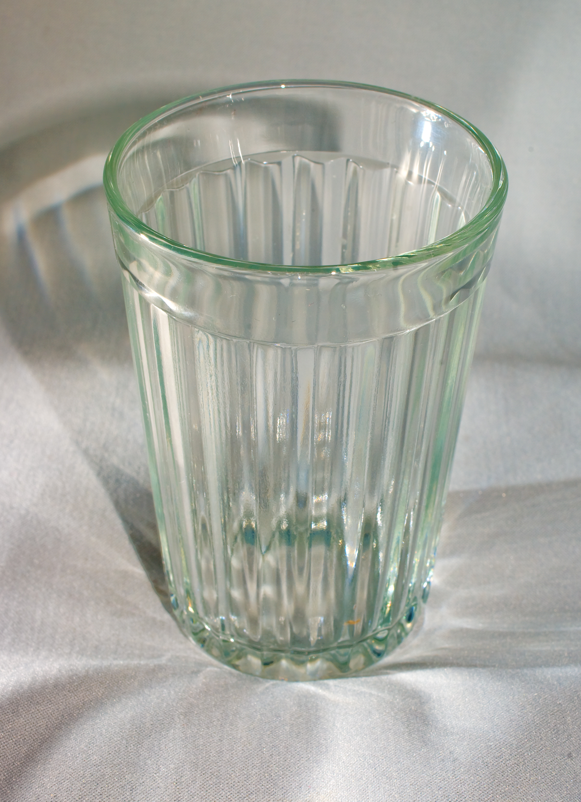

Some sources trace the origin of the choli to the arrival of the Mughals in the 16th century. Other sources trace the origins of the choli to the stanapatta, which was a draped breast band worn at least starting in the 6th century BC and attribute the development of the choli and its popularization to Mughal rule. Until then, Leaving the breasts bare was the most common way of dress. With the subsequent British rule in starting in the mid 19th century, expectations for women's dress grew even more modest, consolidating the role of the choli and the development of the saree blouse. The choli is thus part of a long history of colonization and cultural change and encapsulates many conflicting ideas about Indian femininity and modesty.

This many sided tumbler was designed by Vera Mukhina
The sexualization of the female breast and subsequent sartorial endeavors to both cover it and exploit that sexualization is understood by many as one of the manifestations of a patriarchal objectification of women, a large part of which was imposed by Victorian norms during the British Raj. As a result, choosing to wear or not wear certain garments were also acts of resistance to colonial rule.
Making Our Own
Today, hi-fashion designers such as Sabyasachi Mukherjee, Manish Halhotra, Mandira Sharma, and Neeta Lulla and costume designers for Bollywood continue to explore and popularize new reinterpretations of traditional Indian dress. A famous example are the outfits worn by Madhuri Dixit and Nina Gupta in the piece Choli ke peechhe kya hai? In the blockbuster Khalnayak (1993), which saw a lot of backlash due to its highly suggestive nature. Nonetheless, Khalnayak , and many other popular movies of the time helped popularize new interpretations of these silhouettes.
Step 1: Draw it out! Flat sketches are digital images used as an
industry standard to convey
how finished pieces should look.
Step 2: Create your pattern and use the CAD software to drape it on your model to
check a CAD, 3D version to test it out.
Step 3: Assembly (see tiktok)
Step 4: Try it on, strike a pose
2Day/Tmrw
Coat from soldier's clothSchool dressWoman's theatre costume
Canvas towel caftanHeadscarf dress Canvas dress with trim
Paper or fabric sports skirt pants3 in 1 dress for home and street Hats